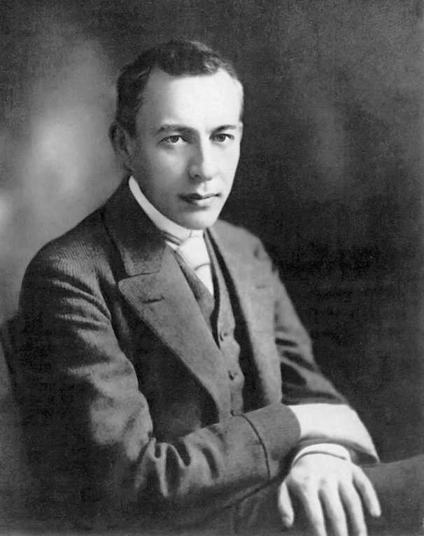

Имя:
Рахманинов Сергей Васильевич
Дата и место рождения:
20 марта (1 апреля) 1873, Семёново, Старорусский уезд, Новгородская губерния, Российская империя
Дата и место смерти:
28 марта 1943 (70 лет), Беверли-Хиллз, Лос-Анджелес, Калифорния, США
Серге́й Васи́льевич Рахма́нинов - — русский композитор, пианист, дирижёр. Синтезировал в своём творчестве принципы петербургской и московской композиторских школ (а также традиции западноевропейской музыки) и создал свой оригинальный стиль.